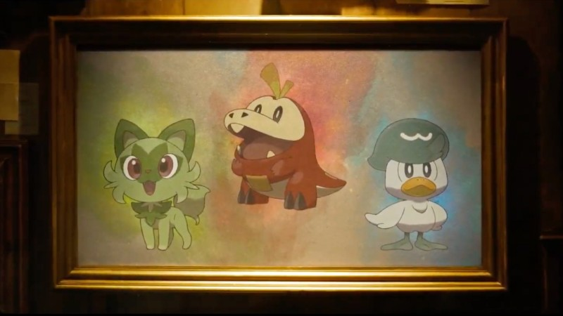
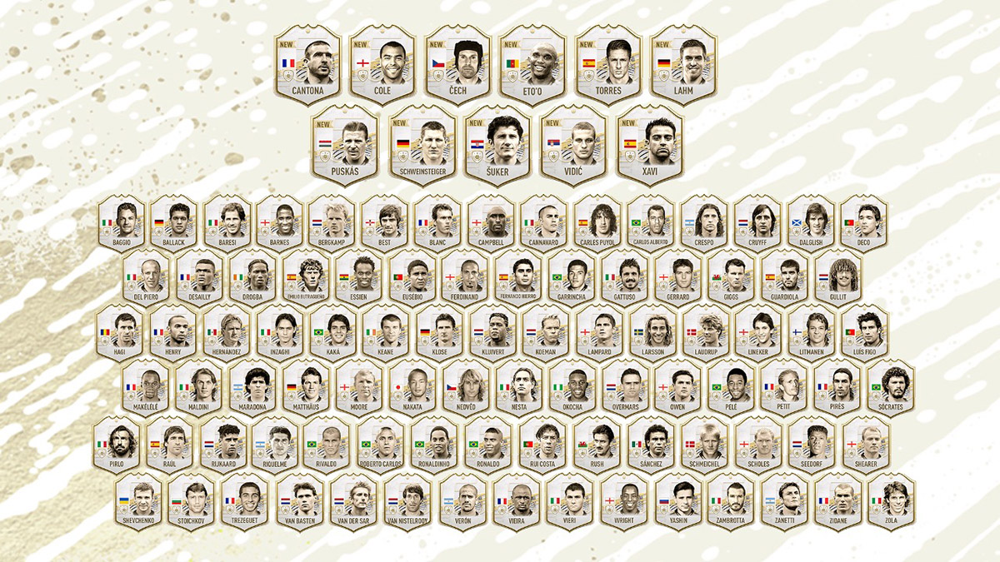

Pokemon Escarlata y Violeta (o Scarlet y Violet), los proximos dos juegos de la serie principal de Pokemon, llegaran a Nintendo Switch a finales de este aÒo , anuncio The Pokemon Company durante una presentacion online. La revelacion se produjo al final del evento online de 14 minutos que mostro noticias para una variedad de juegos diferentes, como Pokemon Go. A decir verdad, la mayoria de la gente no esperaba nada importante del evento. Y parece que esta estrategia funcion. La introduccion al trailer mostraba a un humano de la vida real investigando algo, lo que hacia parecer que el evento iba a terminar en un trailer de algo relacionado con Detective Pikachu. ° Pero no fue asi ! aqui abajo os dejo el enlace de youtube del trailer.
https://youtu.be/MAmueMsFR1o Si la semana pasada aparecieron un total de cincuenta y tres Iconos Moments en FIFA 22, hoy han llegado las cartas restantes. Asi que, en los sobres de Ultimate Team, ya salen las mejores versiones de cada Leyenda. Te dejamos por aquÌ cada una de las nuevas cartas. No mostramos las stats in game porque el post quedaria exageradamente largo, pero si cÛmo es el diseÒo y quÈ estadisticas generales tiene cada uno. Aqui os dejo una foto con todos los iconos. /p> 